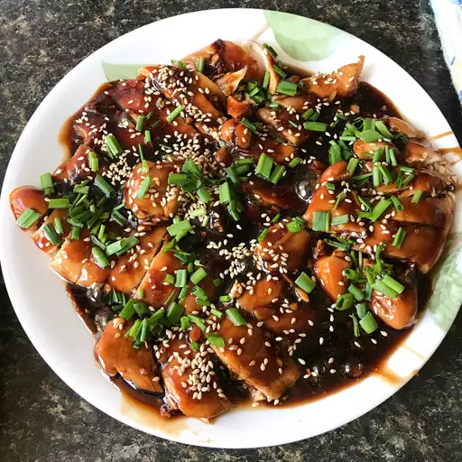

Oven Baked Chicken Teriyaki is a flavorful and easy dish that combines
tender, juicy chicken with a rich, savory-sweet teriyaki glaze. Baked to
perfection, the chicken absorbs the deep umami flavors of soy sauce,
ginger, garlic, and honey, creating a deliciously caramelized coating.
This fuss-free recipe delivers the taste of classic teriyaki without the
need for constant stovetop attention, making it perfect for a quick
weeknight dinner. Serve it over rice or steamed vegetables for a
wholesome and satisfying meal.
Ingredients
- 2 tablespoons cornstarch
- 2 tablespoons water
- 1 cup low-sodium soy sauce
- ½ cup white sugar
- ¼ cup mirin (Japanese sweet wine)
- 4 teaspoons grated fresh ginger
- 3 cloves garlic, minced
- ¼ teaspoon red pepper flakes
- 4 skinless, boneless chicken breast halves
Steps
- Preheat oven to 400 degrees F (200 degrees C).
-
Whisk cornstarch and water together in a small bowl until dissolved;
set aside. Combine soy sauce, sugar, mirin, ginger, garlic, and red
pepper flakes together in a saucepan over medium heat until the
mixture starts to simmer. Slowly whisk in cornstarch mixture. Bring to
a boil; reduce heat to medium-low, and simmer until thickened,
stirring often, about 10 minutes.
-
Pat chicken dry with paper towels; arrange in a baking dish. Pour
sauce over chicken breasts, coating all sides.
-
Bake chicken breasts in the preheated oven until no longer pink in the
center and the juices run clear, 25 to 30 minutes. An instant-read
thermometer inserted into the center should read at least 165 degrees
F (75 degrees C).